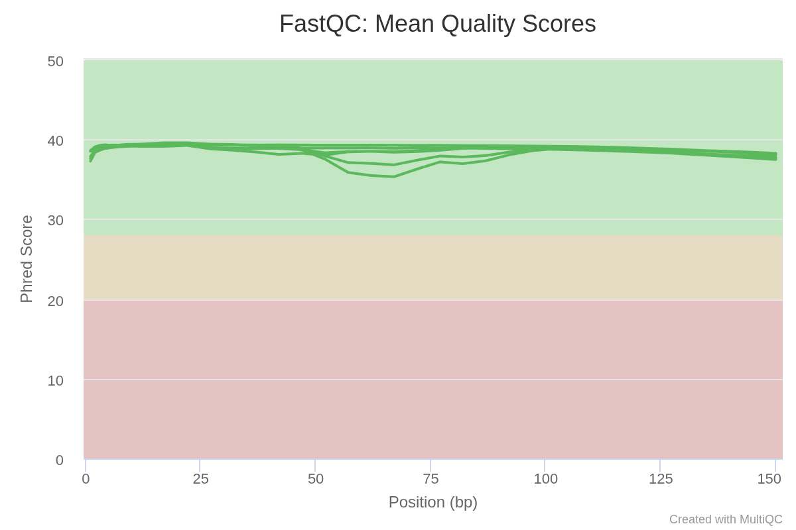

2. Quality Control and Statistics of Raw Reads
Raw data (raw reads) of FASTQ format were firstly processed through fastqc. FastQC aims to provide a simple way to do some quality control checks on raw sequence data coming from high throughput sequencing pipelines.
| Sample ID | Data size(GB) | Raw Data | Clean Data | Read Length(bp) | ||||||||
|---|---|---|---|---|---|---|---|---|---|---|---|---|
| Total Raw Reads | Total Number of bases(bp) | GC% | Phred Score | Q30 score | Total Clean Reads | Total Number of bases(bp) | GC% | Phred Score | Q30 score | |||
| AZ1 | 4.18 | 27,900,218 | 4,185,032,700 | 45 | 39 | 97.07 | 27,843,294 | 4,176,494,100 | 44 | 39 | 97.43 | 150 |
| AZ2 | 4.99 | 33,310,714 | 4,996,607,100 | 52 | 39 | 96.88 | 28,228,772 | 4,234,315,800 | 45 | 39 | 97.54 | 150 |
| AZ3 | 2.87 | 19,140,116 | 2,871,017,400 | 49 | 39 | 96.89 | 17,348,446 | 2,602,266,900 | 44 | 39 | 97.51 | 150 |
Multiqc report of Raw Reads
- Sample ID: Sample name
- Total Raw reads: The original sequence data output by the instrument for a specific sample
- Total Number of bases(bp): The original sequence data in base pairs
- Read length: Average Read Length (bp)
- GC: Average % GC Content
- Phred Score: The measure of base quality of the sequencing data
- Q30 score: The percentage of bases with higher Phred score than 30 in total bases
- Data size(GB): The size of original sequence data in giga base pairs
2.1. Per base sequence quality plot

2.2. Per sequence gc content plot